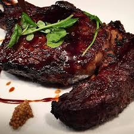

My Quick and Easy Steak Recipe

Description
Sometimes you're feeling a little fancy, but are forced to be a baller on a
budget. It is what it is, there's no shame in it. For just a few dollars, you
can have a delicious restaurant quality meal at home in a short time.
Ingredients
- Cut of steak - This can be personal preference like a fillet, but I've found talking to your local butcher and asking if he has any cuts that he doesn't want to display will get you a healthy discount and save him waste.
- Seasoning! - This can be basic salt and pepper, but I like to use a sprig of rosemary and thyme as well.
- Butter - While olive oil and margarine are options, cheap flavorful butter has the best results
- Your choice of side - Instant mashed potato is my staple, but this recipe is all about the steak!
Steps
- Season and let rest! - This stage is crucial. Salt and pepper both sides and just let it rest for a bit. I typically shoot for about 15 minutes, just enough for the ambient temperature to decrease.
- Stage the skillet - There really is no substitute for a cast iron skillet, but work with what you have. Put the skillet on medium heat and toss in a chunk of butter. Salt and pepper gets added as it melts down.
- Sear baby sear! - Once the butter has melted, using tongs stir in your sprigs of rosemary and thyme if available. You want the butter to absorb the flavor profiles. Place the steak using the tongs and sear. Waiting 45 seconds to a minute and a half depending on your desired temp, flip over and sear the other side. Repeat that and then lift the steak on its sides to get a full sear completely around the steak.
- Baste! - The entire time you're searing the flat sides, you should be spooning the melted butter on top of the steak. The hot butter not only adds flavor and tenderness, but also helps cook the steak.
- Remove from heat - Once the searing process is done, you'll remove the skillet from the heat and place into your preheated oven and let it cook until your desired steak temperature is achieved. I prefer rare to med-rare, so this process usually takes no more than five or seven minutes.
- Let it rest and Enjoy! - It's important to note that while its resting, its ambient heat is still cooking the meat. Rare can cook down to med-rare and so on.
Enjoy!
Oh and, clean up after yourself.